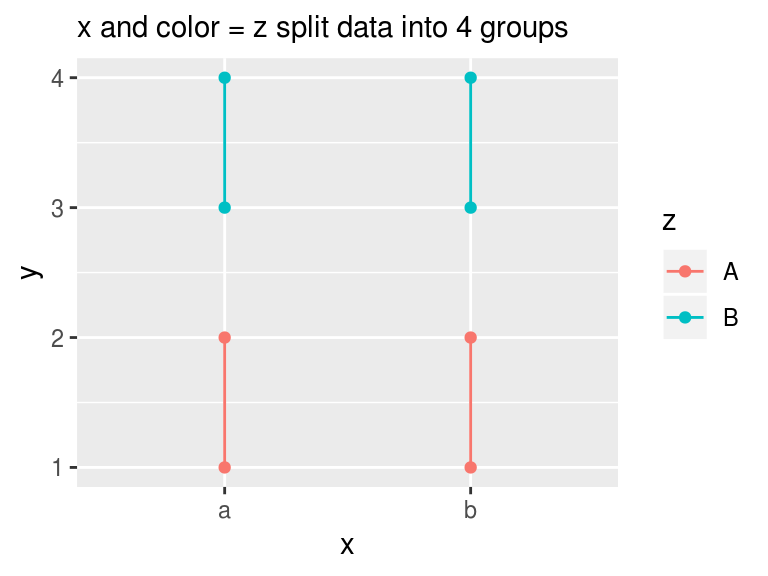

library(ggplot2)
library(grid)
library(gridExtra)Default groups in ggplot2 plot
ggplot2 can subset all data into groups and give each group a unique appearance or transformation. There are two ways to set the groups inplicitly:
- If
xoryare categorical variables, the data are grouped based on each level. - If aesthetic mapping
color,shape, andfilletc. are categorical, they subset the data into groups. Note that these mappings not only display data in different color or shape as the names suggest, they also group data for statistic transformation.
g1 <- ggplot(mpg, aes(drv, hwy)) +
geom_jitter() +
stat_boxplot(fill = NA) +
labs(subtitle = "stat_boxplot runs on the default groups set by categorical drv")
g2 <- ggplot(mpg, aes(drv, hwy, color = factor(year))) +
geom_jitter() +
stat_boxplot(fill = NA) +
labs(subtitle = "aes(color) further divides data into more groups")
grid.arrange(g1, g2, nrow = 1,
top = textGrob("Examples of default grouping by categorical axis and aesthetic mapping"))
What if you do not like the default groups
Here is a simple solution if it is aesthetic mapping that causes the default grouping: do not include the mapping in the ggplot(aes()) as they are inherited by all layers.
Another way to break the default grouping is using aes(group = ...). I will demonstrate how it works using the following examples.
We have the following data and we want connect the path. The path, however, only connect within each group of x, as x is categorical.
# make up a simple dummy data frame
df <- data.frame(x = c("a", "b"),
y = 1:10,
z = rep(c("A", "B"), each = 5))
ggplot(df, aes(x, y)) +
geom_point() +
geom_path() +
labs(subtitle = "x is the default group as it is categorical")
How to ignore the default grouping? Here comes the aes(group = ...). In the following code, the number 123 is strange in group = 123. Actually it can be any constant such as 1 or abc. A constant group removes default grouping.
ggplot(df, aes(x, y)) +
geom_point() +
geom_path(aes(group = 123)) +
labs(subtitle = "constant group removes categorical grouping in x")
Now we want to connect the path within z and label them in different colors, what should we do? The first thing jumps out may be aes(color = z), but it further breaks the data into four groups, which is not unexpected as we already know how grouping works.
ggplot(df, aes(x, y, color = z)) +
geom_point() +
geom_path()
The correct way is to explicitly set the group with aes(group = z)
ggplot(df, aes(x, y, color = z)) +
geom_point() +
geom_path(aes(group = z))
What aes(group = 123) really does
ggplot(df, aes(x, y, fill = z)) +
geom_point() +
geom_polygon(aes(group = z)) +
labs(subtitle = "aes(group = z) overrides the default group to z")
grid.arrange(g1, g2, nrow = 1,
top = textGrob("aes(group = ...) overrides default groups"))